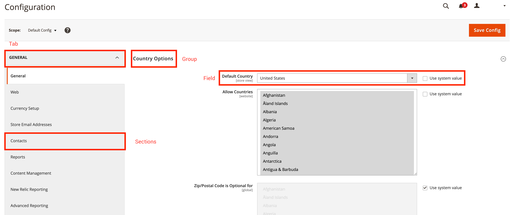

system.xml reference
The system.xml file allows you to manage the Magento system configuration. Use this topic as a general reference for the system.xml file. The system.xml file is located under etc/adminhtml/system.xml in a given Magento 2 extension.
The following code snippet shows the bare skeleton of the file:
1
2
3
4
5
6
<?xml version="1.0" ?>
<config xmlns:xsi="http://www.w3.org/2001/XMLSchema-instance" xsi:noNamespaceSchemaLocation="urn:magento:module:Magento_Config:etc/system_file.xsd">
<system>
<!-- PLACE YOUR MODULE SPECIFIC CONFIGURATION HERE -->
</system>
</config>
If you want instant *XSD validation in your IDE, you can run bin/magento dev:urn-catalog:generate [--ide IDE] [--] <path>.
Tabs // Sections // Groups // Fields
In the system.xml file, it is possible to define four different types of entities, which are related to each other. The following section describes the relationship between tabs, sections, groups, and fields. The following screenshot displays the Magento 2 System Configuration in the Admin backend.
The red squares mark the different types that are defined in the system.xml file:

Tabs are used to split different configuration areas semantically. Each tab can contain one or more sections, which can also be referenced as submenus. A section contains one or more groups. Each group lists one or more fields. You can also use a group to add a general description for the following fields. As mentioned, each group can have one or more fields. Fields are the smallest entity in the system configuration context.
Tabs
A <tab>-Tag references to either an existing or a new tab in the system configuration.
Tab attribute reference
A <tab>-Tag can have the following attributes:
| Attribute | Description | Type | Required |
|---|---|---|---|
id |
Defines the identifier that is used referencing the section. | typeId |
required |
translate |
Defines the field that should be translatable. Provide label to make the label translatable. |
string |
optional |
type |
Defines the input type of the rendered HTML element—defaults to text. |
string |
optional |
sortOrder |
Defines the sort order of the section. High numbers push the section to the bottom of the page; low numbers push the section to the top. | float |
optional |
class |
Adds a defined CSS class to the rendered tab HTML element. | string |
optional |
Tab node reference
A <tab>-Tag can have the following child:
| Node | Description | Type |
|---|---|---|
label |
Defines the label that is displayed in the frontend. | string |
Example: Create a new tab
The following code snippet demonstrates the creation of a new tab with example data.
1
2
3
4
5
6
7
8
<?xml version="1.0" ?>
<config xmlns:xsi="http://www.w3.org/2001/XMLSchema-instance" xsi:noNamespaceSchemaLocation="urn:magento:module:Magento_Config:etc/system_file.xsd">
<system>
<tab id="A_UNIQUE_ID" translate="label" class="a-custom-css-class-to-style-this-tab" sortOrder="10">
<label>A meaningful label</label>
</tab>
</system>
</config>
The snippet above creates a new tab with the identifier A_UNIQUE_ID. As the translate-attribute is defined and references the label, the label-node is translatable. During the rendering process, the CSS class a-custom-css-class-to-style-this-tab will be applied on the HTML element that was created for this tab.
The sortOrder-attribute with the value of 10 defines the position of the tab in the list of all tabs when rendered.
Sections
A <section>-Tag references to either an existing or a new section in the system configuration.
Section attribute reference
A <section>-Tag can have the following attributes:
| Attribute | Description | Type | Required |
|---|---|---|---|
id |
Defines the identifier that is used referencing the section. | typeId |
required |
translate |
Defines the field that should be translatable. Provide label to make the label translatable. |
string |
optional |
type |
Defines the input type of the rendered HTML element. Defaults to text. |
string |
optional |
sortOrder |
Defines the sort order of the section. High numbers will push the section to the bottom of the page; low numbers will push the section to the top. | float |
optional |
showInDefault |
Defines whether the section is shown in the default configuration scope. Specify 1 to show the section and 0 to hide the section. |
int |
optional |
showInStore |
Defines whether the section is shown on store level. Specify 1 to show the section and 0 to hide the section. |
int |
optional |
showInWebsite |
Defines whether the section is shown on website level. Specify 1 to show the section and 0 to hide the section. |
int |
optional |
canRestore |
Defines if the section can be restored to default. | int |
optional |
advanced |
Deprecated since 100.0.2. | bool |
optional |
extends |
By providing an identifier of another section, the content of this node extends the section that you referenced. | string |
optional |
Section node reference
A <section>-Tag can have the following children:
| Node | Description | Type |
|---|---|---|
label |
Defines the label that is displayed in the frontend. | string |
class |
Adds a defined CSS class to the rendered section HTML element. | string |
tab |
References the associated tab. Expects the ID of the tab. | typeTabId |
header_css |
Neither used nor evaluated at the time of this writing. | string |
resource |
References an ACL resource to provide permission settings for this section. | typeAclResourceId |
group |
Define one or more subgroups. | typeGroup |
frontend_model |
Specifies a different frontend model to change the rendering and modify the output. | typeModel |
include |
Used to include additional system_include.xsd compatible files. Usually used to structure large system.xml files. |
includeType |
Example: Create a new section and assign it to a tab
The following code snippet demonstrates the basic usage of creating a new section.
1
2
3
4
5
6
7
8
9
10
11
12
13
14
<?xml version="1.0" ?>
<config xmlns:xsi="http://www.w3.org/2001/XMLSchema-instance" xsi:noNamespaceSchemaLocation="urn:magento:module:Magento_Config:etc/system_file.xsd">
<system>
<tab id="A_UNIQUE_ID" translate="label" class="a-custom-css-class-to-style-this-tab" sortOrder="10">
<label>A meaningful label</label>
</tab>
<section id="A_UNIQUE_SECTION_ID" showInDefault="1" showInWebsite="0" showInStore="1" sortOrder="10" translate="label">
<label>A meaningful section label</label>
<tab>A_UNIQUE_ID</tab>
<resource>VENDOR_MODULE::path_to_the_acl_resource</resource>
</section>
</system>
</config>
The section described above defines the ID A_UNIQUE_SECTION_ID, is visible in the default config view and in a store context. The label-node is translatable. The section is associated to the tab with the ID A_UNIQUE_ID. The section can only be accessed by users that have the permissions defined in the ACL VENDOR_MODULE::path_to_the_acl_resource.
Groups
The <group>-Tag is used to group fields together.
Group attribute reference
A <group>-Tag can have the following attributes:
| Attribute | Description | Type | Required |
|---|---|---|---|
id |
Defines the identifier that is used referencing the group. | typeId |
required |
translate |
Defines the fields that should be translatable. Provide label to make the label translatable. Multiple fields should be separated by a space. |
string |
optional |
type |
Defines the input type of the rendered HTML element. Defaults to text. |
string |
optional |
sortOrder |
Defines the sort order of the section. High numbers will push the section to the bottom of the page; low numbers will push the section to the top. | float |
optional |
showInDefault |
Defines whether the group is shown in the default configuration scope. Specify 1 to show the group and 0 to hide the group. |
int |
optional |
showInStore |
Defines whether the group is shown on store level. Specify 1 to show the group and 0 to hide the group. |
int |
optional |
showInWebsite |
Defines whether the group is shown on website level. Specify 1 to show the group and 0 to hide the group. |
int |
optional |
canRestore |
Defines if the group can be restored to default. | int |
optional |
advanced |
Deprecated since 100.0.2. | bool |
optional |
extends |
By providing an identifier of another group, the content of this node extends the section that you referenced. | string |
optional |
Group node reference
A <group>-Tag can have the following children:
| Node | Description | Type |
|---|---|---|
label |
Defines the label that is displayed in the frontend. | string |
fieldset_css |
Adds one or more CSS classes to a group fieldset. | string |
frontend_model |
Specifies a different frontend model to change the rendering and modify the output. | typeModel |
clone_model |
Specifies a given model to clone fields. | typeModel |
clone_fields |
Enabled or disabled cloning of fields. | int |
help_url |
Not extensible. See below. | typeUrl |
more_url |
Not extensible. See below. | typeUrl |
demo_link |
Not extensible. See below. | typeUrl |
comment |
Adds a comment below the group label. By using <![CDATA[//]]> HTML can be applied. |
string |
hide_in_single_store_mode |
Whether the group should be visible in single store mode. 1 hides the group; 0 shows the group. |
int |
field |
Define one or more fields that should be available under this group. | field |
group |
Define one or more subgroups. | unbounded |
depends |
Can be used to declare dependencies on other fields. Is used to show specific fields/groups only when a given field has a value of 1. This node expects a section/group/field-string. |
depends |
attribute |
Custom attributes can be used by frontend models. Usually used to make a given frontend model more dynamic. | attribute |
include |
Used to include additional system_include.xsd compatible files. Usually used to structure large system.xml files. |
includeType |
The nodes more_url, demo_url and help_url are defined by a PayPal frontend model that is only used once. These nodes are not reusable.
Example: Create a new group for a given section
The following code snippet demonstrates the basic usage of creating a new group.
1
2
3
4
5
6
7
8
9
10
11
12
13
14
15
16
17
18
19
<config xmlns:xsi="http://www.w3.org/2001/XMLSchema-instance" xsi:noNamespaceSchemaLocation="urn:magento:module:Magento_Config:etc/system_file.xsd">
<system>
<tab id="A_UNIQUE_ID" translate="label" class="a-custom-css-class-to-style-this-tab" sortOrder="10">
<label>A meaningful label</label>
</tab>
<section id="A_UNIQUE_SECTION_ID" showInDefault="1" showInWebsite="0" showInStore="1" sortOrder="10" translate="label">
<label>A meaningful section label</label>
<tab>A_UNIQUE_ID</tab>
<resource>VENDOR_MODULE::path_to_the_acl_resource</resource>
<group id="A_UNIQUE_GROUP_ID" translate="label comment" sortOrder="10" showInDefault="1" showInWebsite="0" showInStore="1">
<label>A meaningful group label</label>
<comment>An additional comment helping users to understand the effect when configuring the fields defined in this group.</comment>
<!-- Add your fields here. -->
</group>
</section>
</system>
</config>
The group described above defines the ID A_UNIQUE_GROUP_ID, is visible in the default config view and in a store context. Both, the label and the comment are marked as translatable.
Fields
The <field>-Tag is used inside of <group>-Tags to define specific configuration values.
Field attribute reference
A <field>-Tag can have the following attributes:
| Attribute | Description | Type | Required |
|---|---|---|---|
id |
Defines the identifier that is used referencing the field. | typeId |
required |
translate |
Defines the fields that should be translatable. Provide label to make the label translatable. Multiple fields should be separated by a space. |
string |
optional |
type |
Defines the input type of the rendered HTML element. Defaults to text. |
string |
optional |
sortOrder |
Defines the sort order of the section. High numbers will push the section to the bottom of the page; low numbers will push the section to the top. | float |
optional |
showInDefault |
Defines whether the field is shown in the default configuration scope. Specify 1 to show the field and 0 to hide the field. |
int |
optional |
showInStore |
Defines whether the field is shown on store level. Specify 1 to show the field and 0 to hide the field. |
int |
optional |
showInWebsite |
Defines whether the field is shown on website level. Specify 1 to show the field and 0 to hide the field. |
int |
optional |
canRestore |
Defines if the field can be restored to default. | int |
optional |
advanced |
Deprecated since 100.0.2. | bool |
optional |
extends |
By providing an identifier of another field, the content of this node will extend the section that you referenced. | string |
optional |
Field type reference
A <field>-Tag can have the following values for the type="" attribute:
| Type | Description |
|---|---|
text |
Standard, single row text field |
textarea |
Text block |
select |
Normal dropdown, may need a custom source_model. Also used for Yes/No selections. See Magento\Search\Model\Adminhtml\System\Config\Source\Engine for an example. |
multiselect |
Like select but multiple options are valid. |
button |
A button that triggers an immediate event. Requires custom front-end model to define the button text and the action. See Magento\ScheduledImportExport\Block\Adminhtml\System\Config\Clean for an example. |
obscure |
A text field with the value encrypted and displayed as ****. Changing the type using “Inspect Element” in the browser does not reveal the value. |
password |
Like obscure except that the hidden value is not encrypted, and forcibly changing the type using “Inspect Element” in the browser does reveal the value. |
file |
Allows a file to be uploaded for processing. |
label |
Displays a label instead of an editable field. Use this type when a field is editable only on specific scopes, for example Store View level only. |
time |
Control to set time using three dropdowns–Hour, minute and second. |
allowspecific |
A multiselect list of specific countries. Requires a source_model such as Magento\Shipping\Model\Config\Source\Allspecificcountries |
image |
Allows an image to be uploaded. |
note |
Allows an informational note to be added to the page. This type requires a frontend_model to render the note. |
It is also possible to create a custom field type. This is often done when a special button, with an action, is required. To do this requires two main elements:
- Creating a block in the
adminhtmlarea - Setting the
type=""to the path to this block
The block itself requires, at a minimum, a __construct method and a getElementalHtml() method. The Magento_OfflineShipping is a simple example of a custom type.
For example, in the OfflineShipping module, the Export button is defined in Magento\OfflineShipping\Block\Adminhtml\Form\Field\Export and the field definition looks like:
1
2
3
<field id="export" translate="label" type="Magento\OfflineShipping\Block\Adminhtml\Form\Field\Export" sortOrder="5" showInDefault="0" showInWebsite="1" showInStore="0">
<label>Export</label>
</field>
Field node reference
A <field>-Tag can have the following children:
| Node | Description | Type |
|---|---|---|
label |
Defines the label that displays in the frontend. | string |
comment |
Adds a comment below the group label. Use <![CDATA[//]]> to apply HTML formatting |
string |
tooltip |
Frontend element to provide contextual help for the field. Displays as a small icon beside the field. | string |
hint |
Displays additional information. Only available with specific frontend_model. |
string |
frontend_class |
Adds a defined CSS class to the rendered section HTML element. | string |
frontend_model |
Specifies a different frontend model to change the rendering and modify the output. | typeModel |
backend_model |
Specifies a different backend model to modify the configured values. | typeModel |
source_model |
Specifies a different source model that provides a specific set of values. | typeModel |
config_path |
Can be used to overwrite the generic config path of a field. | typeConfigPath |
validate |
Define different validation rules (space separated). Full reference list of available validation rules is listed below. | string |
can_be_empty |
Used when type is multiselect to specify that a field can be empty. |
int |
if_module_enabled |
Used to display a field only when a given module is enabled. | typeModule |
base_url |
Used in combination with upload_dir for file uploads. |
typeUrl |
upload_dir |
Specify a target directory for uploads. This node has additional attributes and nodes. Look them up before using this. | typeUploadDir |
button_url |
Displays a button if button_url and button_label are specified. Usually used in combination with a custom frontend model. |
typeUrl |
button_label |
Displays a button if button_label and button_url are specified. Usually used in combination with a custom frontend model. |
string |
more_url |
Not extensible. See below. | typeUrl |
demo_url |
Not extensible. See below. | typeUrl |
hide_in_single_store_mode |
Whether the group should be visible in single store mode. 1 hides the group; 0 shows the group. |
int |
source_service |
Service used to populate select options. | complexType |
options |
Not used. Potentially deprecated. | complexType |
depends |
Can be used to declare dependencies to other fields. Is used to only show specific fields/groups when a given field has a value of 1. This node expects a section/group/field-string. |
complexType |
attribute |
Custom attributes can be used by frontend models. Usually used to make a given frontend model more dynamic. | complexType |
requires |
Not extensible. See below. | complexType |
The nodes more_url, demo_url, requires and options are defined by a different core payment model and are only used once. These nodes are not reusable.
Example: Create two fields in a given group
1
2
3
4
5
6
7
8
9
10
11
12
13
14
15
16
17
18
19
20
21
22
23
24
25
26
27
28
29
30
31
32
33
34
35
36
<config xmlns:xsi="http://www.w3.org/2001/XMLSchema-instance" xsi:noNamespaceSchemaLocation="urn:magento:module:Magento_Config:etc/system_file.xsd">
<system>
<tab id="A_UNIQUE_ID" translate="label" class="a-custom-css-class-to-style-this-tab" sortOrder="10">
<label>A meaningful label</label>
</tab>
<section id="A_UNIQUE_SECTION_ID" showInDefault="1" showInWebsite="0" showInStore="1" sortOrder="10" translate="label">
<label>A meaningful section label</label>
<tab>A_UNIQUE_ID</tab>
<resource>VENDOR_MODULE::path_to_the_acl_resource</resource>
<group id="A_UNIQUE_GROUP_ID" translate="label" sortOrder="10" showInDefault="1" showInWebsite="0" showInStore="1">
<label>A meaningful group label</label>
<comment>An additional comment helping users to understand the effect when configuring the fields defined in this group.</comment>
<field id="A_UNIQUE_FIELD_ID" translate="label" sortOrder="10" showInDefault="0" showInWebsite="0" showInStore="1" type="select">
<label>Feature Flag Example</label>
<comment>This field is an example for a basic yes or no select.</comment>
<tooltip>Usually these kinds of fields are used to enable or disable a given feature. Other fields might be dependent to this and will only appear if this field is set to yes.</tooltip>
<source_model>Magento\Config\Model\Config\Source\Yesno</source_model>
</field>
<field id="ANOTHER_UNIQUE_FIELD_ID" translate="label" sortOrder="10" showInDefault="0" showInWebsite="0" showInStore="1" type="text">
<label>A meaningful field label</label>
<comment>A descriptive text explaining this configuration field.</comment>
<tooltip>Another possible frontend element that also can be used to describe the meaning of this field. Will be displayed as a small icon beside the field.</tooltip>
<validate>required-entry no-whitespace</validate> <!-- Field is required and must not contain any whitespace. -->
<if_module_enabled>VENDOR_MODULE</if_module_enabled>
<depends> <!-- This field will only be visible if the field with the id A_UNIQUE_FIELD_ID is set to value 1 -->
<field id="A_UNIQUE_FIELD_ID">1</field>
</depends>
</field>
</group>
</section>
</system>
</config>
The example above creates two fields, both visible/configurable in default and in store view. Both fields have a comment and a tooltip to describe their purpose to the user. The label-node is translatable.
The field with the identifier ANOTHER_UNIQUE_FIELD_ID is visible when the given module in the if_module_enabled is enabled globally. The field also validates its value against the rules required-entry and no-whitespace.
The field with the identifier A_UNIQUE_FIELD_ID defines a different source model which provides tha values Yes and No.
Common source models
The following source models are provided by the Magento 2 Core. In general, there are many more source models; the following list describes the most common ones. Be aware, that these source models need the field attribute type to be set to select in order to work properly.
| Source Model | Description |
|---|---|
Magento\Config\Model\Config\Source\Yesnocustom |
Provides the values Yes, No and Specified. |
Magento\Config\Model\Config\Source\Enabledisable |
Provides the values Enable, Disable. Saves the values as 0 and 1 in the database. |
Magento\AdminNotification\Model\Config\Source\Frequency |
Provides the values 1 Hour,2 Hours,6 Hours,12 Hours and 24 Hours. Values are saved as integers. |
Magento\Catalog\Model\Config\Source\TimeFormat |
Provides the values for the time format (12 h/24 h). |
Magento\Cron\Model\Config\Source\Frequency |
Provides the values Daily, Weekly and Monthly. Values are saved in the database as D, W and M. |
Magento\GoogleAdwords\Model\Config\Source\Language |
Provides the values for a 2-letter code of a given language in the ISO 639-1 format (e.g. en). |
Magento\Config\Model\Config\Source\Locale |
Provides the values similar to the above one, but pertains a locale code (e.g. en_US). |
Field Validation
A field can have one or more validator-classes assigned to make sure that the input of the user meets the requirements of the extension. Validation rules can be applied with the <validate>-Tag.
The following example validates a field and adds several different validation rules.
1
2
3
<field id="A_CUSTOM_IDENTIFIER" showInDefault="1" showInWebsite="0" showInStore="1">
<validate>required-entry validate-clean-url no-whitespace</validate>
</field>
The following validation rules are available:
| Rule | Description |
|---|---|
alphanumeric |
Allows letters, numbers, spaces or underscores only. |
integer |
Allows a positive or negative non-decimal number. |
ipv4 |
Allows a valid IP v4 address. |
ipv6 |
Allows a valid IP v6 address. |
letters-only |
Allows letters only. For example, abcABC. |
letters-with-basic-punc |
Allows letters or punctuation only. Must pass the following expression: /^[a-z\-.,()\u0027\u0022\s]+$/i. |
mobileUK |
Allows a (UK) mobile phone number. |
no-marginal-whitespace |
Disallows white spaces at the start or end of the value. |
no-whitespace |
Disallows white spaces. |
phoneUK |
Allows a (UK) phone number. |
phoneUS |
Allows a (US) phone number. |
required-entry |
Disallows an empty value (equivalent validation as validate-no-empty).Validation failure message: “This is a required field.” |
time |
Allows a valid time in 24-hour format, between 00:00 and 23:59. For example 15, 15:05 or 15:05:48. |
time12h |
Allows a valid time in 12-hour format, between 12:00 am and 11:59:59 pm. For example 3 am, 11:30 pm, 02:15:00 pm. |
validate-admin-password |
Allows 7 or more characters, using both numeric and alphabetic. |
validate-alphanum-with-spaces |
Allows usage of letters (a-z or A-Z), numbers (0-9), or spaces only. |
validate-clean-url |
Allows a valid URL. For example, http://www.example.com or www.example.com. |
validate-currency-dollar |
Allows a valid (dollar) amount. For example, $100.00. |
validate-data |
Allows usage of letters (a-z or A-Z), numbers (0-9), or underscores (_) only. The first character must be a letter. (Must match expression: /^[A-Za-z]+[A-Za-z0-9_]+$/)Validation failure message: “Please use only letters (a-z or A-Z), numbers (0-9) or underscore (_) in this field, and the first character should be a letter.” |
validate-date-au |
Enforces the following date format: dd/mm/yyyy. For example, 17/03/2006 for the 17th of March, 2006. |
validate-email |
Allows a valid email address. For example, johndoe@domain.com. |
validate-emailSender |
Allows a valid email address. For example, johndoe@domain.com. |
validate-fax |
Allows a valid fax number. For example, 123-456-7890. |
validate-no-empty |
Disallows an empty value (equivalent validation as requried-entry).Validation failure message: “Empty value.” |
validate-no-html-tags |
Disallows usage of HTML tags. |
validate-password |
Allows 6 or more characters. Leading and trailing spaces will be ignored. |
validate-phoneLax |
Allows a valid phone number. For example, (123) 456-7890 or 123-456-7890. |
validate-phoneStrict |
Allows a valid phone number. For example, (123) 456-7890 or 123-456-7890. |
validate-select |
Enforces that the select option chosen not have a null value, string value of none or string length of 0. |
validate-ssn |
Allows a valid (US) social security number. For example, 123-45-6789. |
validate-street |
Allows usage of letters (a-z or A-Z), numbers (0-9), spaces, and “#” only. |
validate-url |
Allows a valid URL. Protocol is required (http://, https:// or ftp://). |
validate-xml-identifier |
Allows a valid XML-identifier. For example, something_1, block5, id-4. |
validate-zip-us |
Allows a valid (US) ZIP code. For example, 90602 or 90602-1234. |
vinUS |
Allows (US) vehicle identification number (VIN) value. |